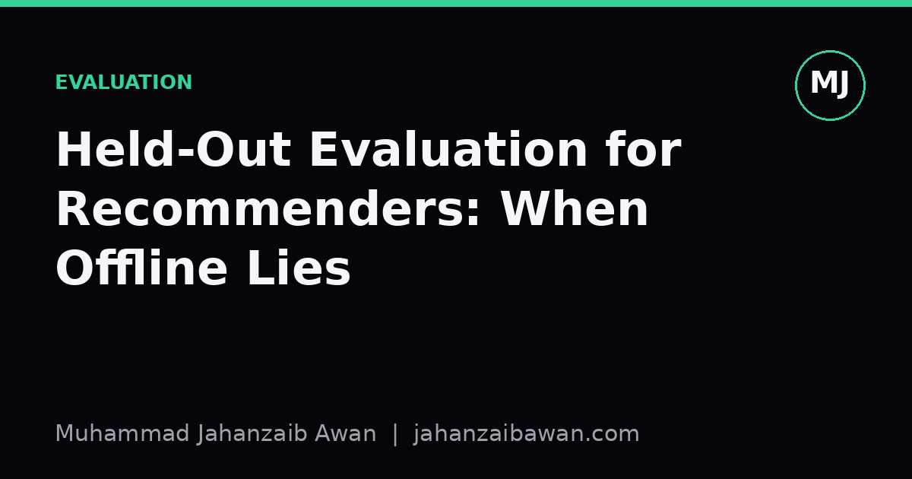

Held-Out Evaluation for Recommenders: When Offline Lies
A model that wins on NDCG in your notebook can lose users in production. Here is why offline held-out evaluation for recommender systems so often misleads, and what to do about it.

The seductive clarity of a held-out score
Offline evaluation for recommender systems looks like ordinary machine learning evaluation. You hold out some interactions, train on the rest, rank items for each held-out user, and compute recall@k or NDCG. The number is clean, reproducible, and easy to put in a table. That cleanliness is exactly the problem. Recommendation is not a static labelling task; it is an intervention in a feedback loop, and a held-out split taken from historical logs cannot see the counterfactual world where your new model actually chose what the user saw.
Consider a concrete setup. You have a dataset of user clicks over six months. You split randomly, eighty percent of interactions for training and twenty percent for testing, and you train a matrix factorisation model against a popularity-based baseline. Offline, your model scores NDCG@10 of 0.31 against the baseline's 0.24, a seemingly decisive win. You ship it. Engagement barely moves, and in one segment it actually drops. The offline number was not wrong as a measurement; it was wrong as a proxy for what you actually wanted to know.
The gap exists because the test set was generated by the old system, not the new one. Users only clicked on items the previous recommender chose to show them. Your held-out labels are a biased sample of relevance, skewed towards whatever the production system already favoured. A model that is good at predicting those historical clicks is good at mimicking the old system's exposure pattern, which is a different skill from being good at satisfying users under new, different exposure.
Exposure bias and leakage hiding inside a random split
A random train-test split by interaction, rather than by time or by user, is the most common source of quiet leakage in recommender evaluation. If you shuffle all interactions and split randomly, a user's click from March can end up in training while their click from January sits in the test set. Your model effectively gets to see the future to predict the past. In practice this inflates offline accuracy by a meaningful margin, because recommenders exploit short-term patterns such as a user who bought a phone case right after buying a phone; randomly splitting breaks the natural temporal order and lets that adjacency leak across the split boundary.
A leakage-aware alternative is a temporal split: train on everything before a cutoff date, test on everything after, for every user. This respects the only direction time actually flows. It is also less generous: NDCG numbers under temporal splitting are usually lower than under random splitting, sometimes substantially, which surprises teams the first time they switch. That drop is not a regression, it is the random split's leakage being removed.
Even a correctly time-ordered split has a second, subtler issue: exposure bias. Items a user never saw cannot appear as positive labels, no matter how much they would have liked them. If your catalogue has ten thousand items and the old system only ever showed each user a few hundred of them, your test set treats the other items as implicitly irrelevant, when really they are simply unobserved. A new model that successfully surfaces previously unshown items that users genuinely like will be penalised offline for not matching the historical click pattern, then rewarded online when those same items get clicked. This is precisely the mechanism behind cases where offline and online results point in opposite directions.
What narrows the gap: counterfactual and interleaved evaluation
One practical mitigation is inverse propensity weighting, where each historical interaction is weighted by the inverse probability that the old system would have shown that item in that context. If the baseline recommender showed a popular item to ninety percent of users but a niche item to only five percent, the niche item's clicks are upweighted when scoring a new model, roughly correcting for the fact that it had far less chance to be seen in the first place. This does not fully solve the problem, because propensities themselves must be estimated and can be noisy, but it is a genuine improvement over treating all unclicked items as equally irrelevant.
A second practical technique is interleaving, where two ranked lists from two different models are merged into a single list shown to the same user, and credit is attributed to whichever model's items get clicked. Because both models are evaluated simultaneously within the same user session, interleaving controls for a huge amount of the confounding that separate online A/B arms suffer from, and it typically needs far fewer users to detect a meaningful difference than a full randomised online test. It is still an online method, requiring real traffic, but it sits usefully between a cheap offline score and an expensive full rollout.
None of this means offline evaluation is worthless; it means it answers a narrower question than people assume. A well-constructed temporal, leakage-checked offline test is good at catching regressions, comparing architectures quickly during development, and ruling out obviously broken models before they reach users. It is poor at predicting absolute online lift, poor at judging models that behave very differently from the system that generated the logs, and almost always poor for diversity or long-term engagement objectives that a single-session click metric was never designed to capture.
A practical checklist before you trust a number
Before reporting an offline recommender result, I now ask a short list of questions that would have saved me from overclaiming more than once. Is the split temporal rather than random, so that no future interaction leaks into training? Does the metric account for exposure, through propensity weighting or at minimum an explicit note that unclicked does not mean disliked? Is the baseline a genuinely strong one, such as a tuned popularity or co-occurrence model, rather than a weak strawman that makes any new idea look good?
I also treat a large offline gain as a hypothesis, not a conclusion. If a new model shows a ten-point NDCG improvement, I want an interleaved test or a small online experiment before I believe it translates into real user value, because the history of this field is full of offline wins that evaporated in production. The honest takeaway is simple: offline held-out evaluation is a filter for bad ideas, not a certificate for good ones, and the only evaluation that fully answers the question you actually care about is one run on real users making real choices.